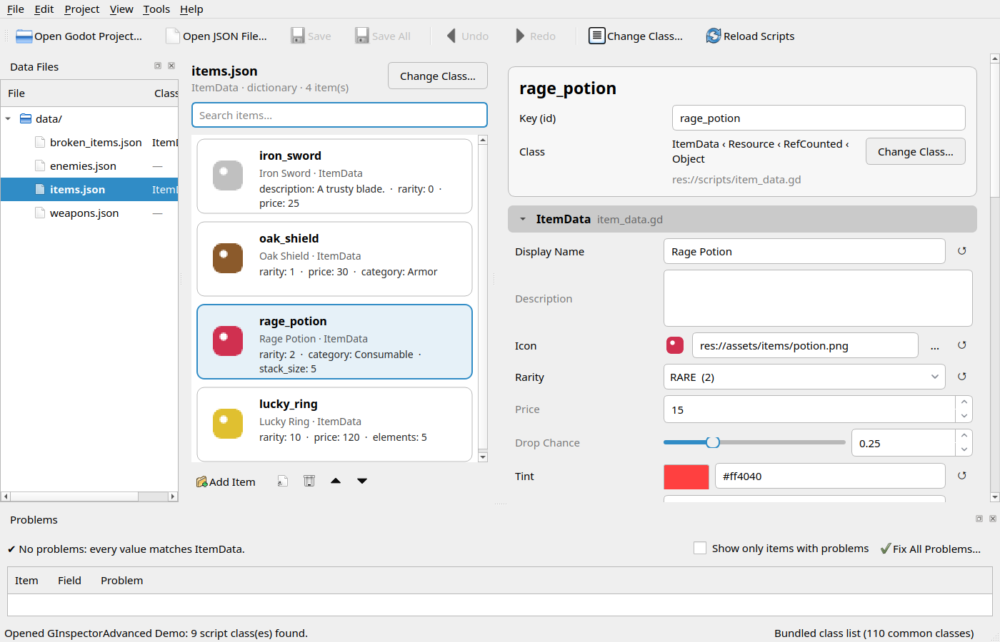
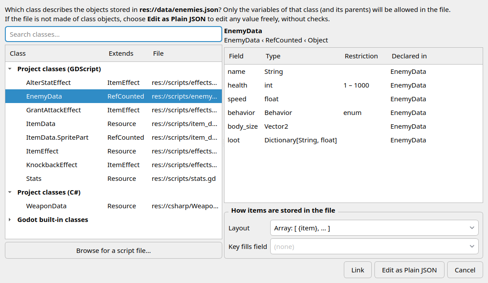
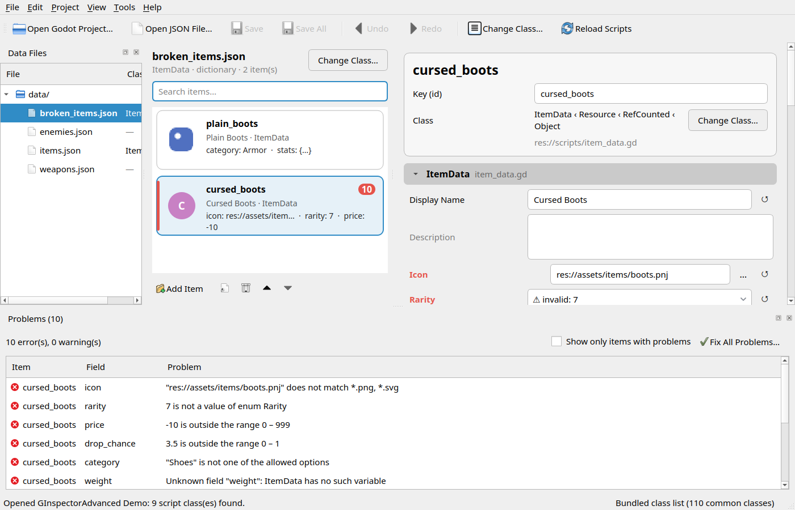

El inspector de Godot,
para tus archivos JSON
GInspectorAdvanced es un editor visual para los datos JSON de tu juego: objetos, enemigos, diálogos, niveles… Enlazas cada archivo con la clase que lo describe y lo editas con un inspector que respeta tipos, rangos y enums. El JSON siempre coincide con la clase que lo va a cargar.

Tus datos en JSON, con la comodidad del inspector
Muchos juegos guardan sus datos en JSON porque es fácil de leer y de versionar. Pero editarlo a mano es lento y es muy fácil escribir un campo mal, un número fuera de rango o un valor de enum que no existe. GInspectorAdvanced lee tus scripts y te da un formulario hecho a medida.
Entiende tus clases
Analiza los .gd y .cs del proyecto: variables @export, tipos, enums,
herencia, clases internas y anotaciones como @export_range o @export_file.
Imposible guardar datos inválidos
Cada editor aplica las restricciones de la clase, así que la interfaz no puede producir un valor que tu juego rechazaría. Lo que ya estaba mal se marca en rojo y se arregla con un clic.
Respeta tu archivo
Al guardar conserva el orden de las claves, la indentación (tabs o espacios), 2 frente a
2.0 y los objetos escritos en una línea. Los diffs de Git quedan limpios.
class_name ItemData extends Resource enum Rarity { COMMON, UNCOMMON, RARE, LEGENDARY = 10 } @export var display_name: String = "Unnamed" @export_file("*.png", "*.svg") var icon: String @export var rarity: Rarity = Rarity.COMMON @export_range(0, 999, 1, "or_greater") var price := 15 @export_range(0.0, 1.0, 0.05) var drop_chance := 0.25 @export var tint := Color(1, 1, 1) @export var stats: Stats @export var effects: Array[ItemEffect] = []
{
"rage_potion": {
"display_name": "Rage Potion",
"icon": "res://assets/items/potion.png",
"rarity": 2, // combo: RARE
"price": 15, // 0 – 999+
"drop_chance": 0.25, // deslizador 0 – 1
"tint": "#ff4040", // selector de color
"stats": { "damage": 4 },
"effects": [
{ "type": "alter_stat", … }
]
}
}
De tu proyecto a datos editables en cuatro pasos
No hay que instalar nada en el proyecto de Godot ni cambiar tu código. Solo abres la carpeta.
Abre tu proyecto de Godot
Usa File ▸ Open Godot Project… y elige la carpeta que contiene project.godot.
Se analizan todos los scripts .gd y .cs en busca de clases.
El panel Data Files lista cada .json del proyecto junto a la clase que tiene enlazada.
Los proyectos recientes aparecen en la pantalla de inicio.

Enlaza el JSON con su clase (solo una vez)
Al abrir un archivo sin enlazar aparece el selector de clases. Puedes elegir:
- Clases del proyecto: GDScript (con o sin
class_name), clases internas y C#. - Clases integradas de Godot:
Resource,Node2D… - Cualquier script, incluso fuera del proyecto.
- Edit as Plain JSON, para archivos que no son objetos de una clase.
A la derecha ves la vista previa de los campos permitidos. La disposición (diccionario, array u objeto
único) se detecta sola. El enlace se guarda en ginspector.json.

Edita con un inspector a medida
Cada elemento del archivo es una tarjeta con miniatura, título y resumen. Al hacer clic se abre en el inspector, organizado como el de Godot:
- Una sección por clase de la cadena de herencia, con
@export_groupy subgrupos. - Composición: un campo de tipo
Statsabre una sección anidada. - Polimorfismo: si el campo es una clase base, eliges la subclase en un combo.
- Arrays y diccionarios tipados con añadir, duplicar, reordenar y eliminar.
- Los campos en gris no están en el JSON y usan el valor por defecto de la clase.

Encuentra y arregla los errores
El panel Problems lista cada campo desconocido, tipo incorrecto, valor fuera de rango u opción inválida. Doble clic para saltar al campo; Fix All Problems… repara el archivo entero en un solo paso que se puede deshacer.
Si cambias tus scripts en Godot, al volver a la ventana se recargan solos y los campos que ya no existen aparecen en rojo para borrarlos.

Todo lo que necesitas para mantener tus datos
GDScript y C#
@export y [Export], class_name, clases internas (Outer.Inner), scripts referenciados por ruta y clases integradas de Godot.
Restricciones reales
Rangos, or_greater, sufijos, enums, flags, filtros de archivo, texto multilínea, placeholders, colores sin alfa…
Tarjetas con miniatura
Imagen tomada de cualquier ruta res:// del objeto, insignia con el número de errores, búsqueda y filtro.
Herencia y polimorfismo
Elige la subclase en un combo; se guarda como "type": "alter_stat". Clave y valores configurables.
Deshacer / rehacer completo
Ctrl+Z / Ctrl+Y. Las ediciones seguidas de un mismo campo se agrupan en un solo paso.
Guardado seguro
Conserva formato, orden e indentación, y escribe una copia .bak antes de guardar (desactivable).
Cambios externos
Los scripts editados se recargan al volver a la ventana. Si el JSON cambia en disco, se recarga (preguntando si tienes cambios).
Detección de clase errónea
Si ningún objeto del archivo encaja con la clase elegida, te pregunta si te has equivocado de clase.
Modo JSON plano
Para ajustes, traducciones o listas: edita cualquier valor con su tipo JSON, sin clase ni comprobaciones.
Pensado para equipos
ginspector.json guarda qué JSON va con qué clase. Súbelo al repositorio y todo el equipo comparte los enlaces.
API exacta de tu Godot
Opcional: indica tu ejecutable de Godot para leer todas las clases integradas de tu versión (--dump-extension-api).
Tema claro u oscuro
Usa la paleta de tu sistema y funciona igual en Windows y en Linux.
Cada tipo tiene su control
Lo que declaras en el script decide qué control aparece y qué se valida.
| En el script | En el inspector | Se valida |
|---|---|---|
bool | Casilla | debe ser true/false |
int, float | Campo numérico | número (entero para int) |
@export_range(0, 100, 5) | Deslizador + campo, limitado al rango | fuera de rango |
enum Rarity {…}, @export_enum("A", "B") | Combo con los nombres | valor que no está en el enum |
@export_flags("Fire", "Water") | Casillas | bits que no existen |
@export_file("*.png"), @export_dir | Ruta + examinar (dentro del proyecto) | extensión; aviso si falta el archivo |
Vector2/3/4, Rect2 | Campos x / y / z / w | [x, y], {"x":…} o "(x, y)" |
Color | Selector de color + hex | "#rrggbb(aa)", [r,g,b] o {"r":…} |
Texture2D, AudioStream, PackedScene… | Ruta res:// con vista previa | debe ser una ruta |
Tu clase (var stats: Stats) | Sección anidada | cada campo anidado |
Array[T], PackedXArray, Dictionary[K, V] | Editor de lista / clave-valor | cada elemento |
Listo en un minuto
Descarga la última versión para tu sistema. No requiere instalar Qt ni nada más. Todas las versiones están en Releases.
Windows
Windows 10 / 11 · 64 bits
- Descarga
GInspectorAdvanced-windows-x64.zip. - Descomprímelo en una carpeta, por ejemplo
C:\Herramientas\GInspectorAdvanced. - Ejecuta
GInspectorAdvanced.exe. Si quieres, crea un acceso directo en el escritorio.
El ejecutable no está firmado. Si SmartScreen muestra un aviso, pulsa Más información ▸ Ejecutar de todas formas.
Descargar .zipLinux
AppImage · x86_64 · cualquier distribución
- Descarga
GInspectorAdvanced-linux-x86_64.AppImage. - Dale permiso de ejecución y ábrelo:
chmod +x GInspectorAdvanced-linux-x86_64.AppImage
./GInspectorAdvanced-linux-x86_64.AppImage # o: ./… ruta/a/mi_juego
Si tu distribución no trae FUSE 2, instala libfuse2 o ejecútalo con
--appimage-extract-and-run.
Compilar desde el código fuente
Necesitas CMake ≥ 3.19, un compilador C++17 y Qt 6.2+ con los módulos Widgets y Svg.
Linux
# Debian/Ubuntu: sudo apt install build-essential cmake qt6-base-dev libqt6svg6-dev # Fedora: sudo dnf install gcc-c++ cmake qt6-qtbase-devel qt6-qtsvg-devel # Arch: sudo pacman -S base-devel cmake qt6-base qt6-svg git clone https://github.com/Grojman/GInspectorAdvanced.git cd GInspectorAdvanced cmake -S . -B build -DCMAKE_BUILD_TYPE=Release cmake --build build -j ./build/GInspectorAdvanced # opcional: entrada en el menú e icono sudo cmake --install build
Windows
Instala Qt 6 con el instalador online (kit MSVC 2022 64 bits o MinGW, con Qt SVG) y, desde un Developer Command Prompt:
cmake -S . -B build -DCMAKE_PREFIX_PATH=C:\Qt\6.8.0\msvc2022_64 cmake --build build --config Release C:\Qt\6.8.0\msvc2022_64\bin\windeployqt.exe build\Release\GInspectorAdvanced.exe
También puedes abrir la carpeta en Qt Creator y pulsar Ejecutar.
Bueno saberlo
¿Necesito Godot abierto o un plugin?
No. Los scripts se leen como texto, sin ejecutar Godot. La aplicación solo escribe tus JSON y ginspector.json.
¿Qué es ginspector.json?
Un archivo en la raíz del proyecto que guarda qué JSON va enlazado con qué clase y algunos ajustes. Godot lo ignora salvo que tu código lo cargue.
¿Qué variables puedo editar?
Por defecto, solo las exportadas (@export / [Export]), igual que guarda Godot. En Tools ▸ Settings puedes incluir las públicas o todas.
¿Y si mi cargador renombra claves?
Las claves del JSON deben llamarse como las variables. Si tu código traduce "sprite" → icon, esas claves aparecerán como desconocidas.
¿Acepta comentarios o comas finales?
No, igual que el parser de Godot. El JSON tiene que ser estándar.
¿La aplicación está en español?
La interfaz está en inglés. En esta página los menús y botones aparecen con su nombre original, por ejemplo File ▸ Open Godot Project….
¿Puedo probarlo sin mi proyecto?
Sí: el repositorio incluye examples/demo_project con objetos, enemigos, efectos polimórficos y un archivo con errores a propósito.
Deja de editar JSON a mano
Descarga GInspectorAdvanced, abre tu proyecto de Godot y edita tus datos con la seguridad de que siempre encajan con tus clases.